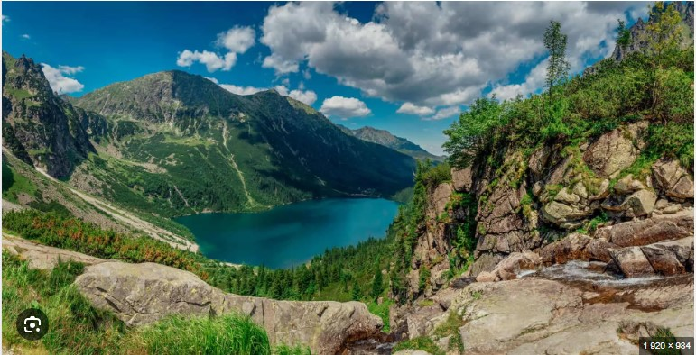

Tatry (514.5, słow. Tatry, niem. Tatra, węg. Tátra[1]) – najwyższe pasmo w łańcuchu Karpat, również najwyższe między Alpami a Uralem i Kaukazem. Są częścią Łańcucha Tatrzańskiego, w Centralnych Karpatach Zachodnich[2]. Wysokogórska część Tatr o glacjalnym charakterze jest unikatowa w skali Polski i zalicza się do najwyższej kategorii pod względem atrakcyjności[2]. Tatry są objęte ochroną przez ustanowienie na ich obszarze polskiego Tatrzańskiego Parku Narodowego i słowackiego Tatrzańskiego Parku Narodowego oraz przynależności do Światowej Sieci Rezerwatów Biosfery UNESCO. Krainy etnograficzne otaczające Tatry to: Podhale, Spisz, Orawa i Liptów[
